Hot-gas boundary condition
CEA and Bartz as Fluent expressions.
Work/02 of 05In progress
Regen-cooled thermal CFD and structural FEA of a 3D-printed N₂O/IPA rocket engine, for the UK's national student propulsion competition.
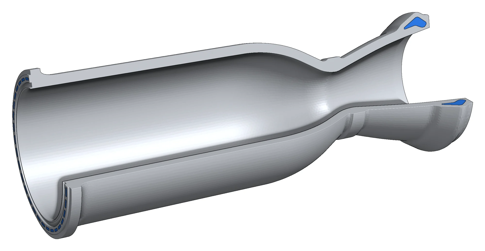
Race 2 Space is the UK national student propulsion competition, where university teams design, build and hot-fire their own rocket engines. Ours burns nitrous oxide with isopropyl alcohol at 30 bar and an O/F ratio of 3. The chamber is 3D printed in AlSi10Mg with 35 regenerative cooling channels, so all of the fuel flows around the wall before it reaches the injector.
AlSi10Mg is light and easy to print, but it loses most of its strength above about 200 to 250 °C and melts near 570 °C. The combustion gas is at 2,564 K. I wanted two answers before anything was printed: can the fuel alone keep the wall cool enough, and will the wall hold the pressure?
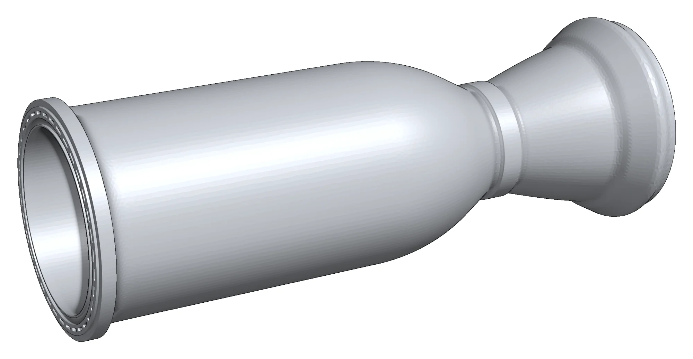
Simulating the burning N₂O/IPA spray would be a research project in itself, and its heat flux would be no more reliable than a correlation. So I replaced the hot gas with the Bartz equation. Chamber temperature, c* and gamma came from NASA CEA, I extracted the gas-side contour from the CAD, and worked out the Mach number at each station from the local area ratio. Bartz then gives the gas-side heat transfer coefficient and the adiabatic wall temperature all along the engine.
Fluent cannot run Bartz directly, so I fitted both quantities as functions of local radius, one curve each side of the throat, and entered them as named expressions. Applying them as a convection condition rather than a fixed heat flux lets Fluent find the wall temperature itself, so a hotter wall takes in less heat, as it would in reality.
At the throat this matters: a 200 °C wall would take about 22.8 MW/m², the wall the CFD predicted takes about 15.2.
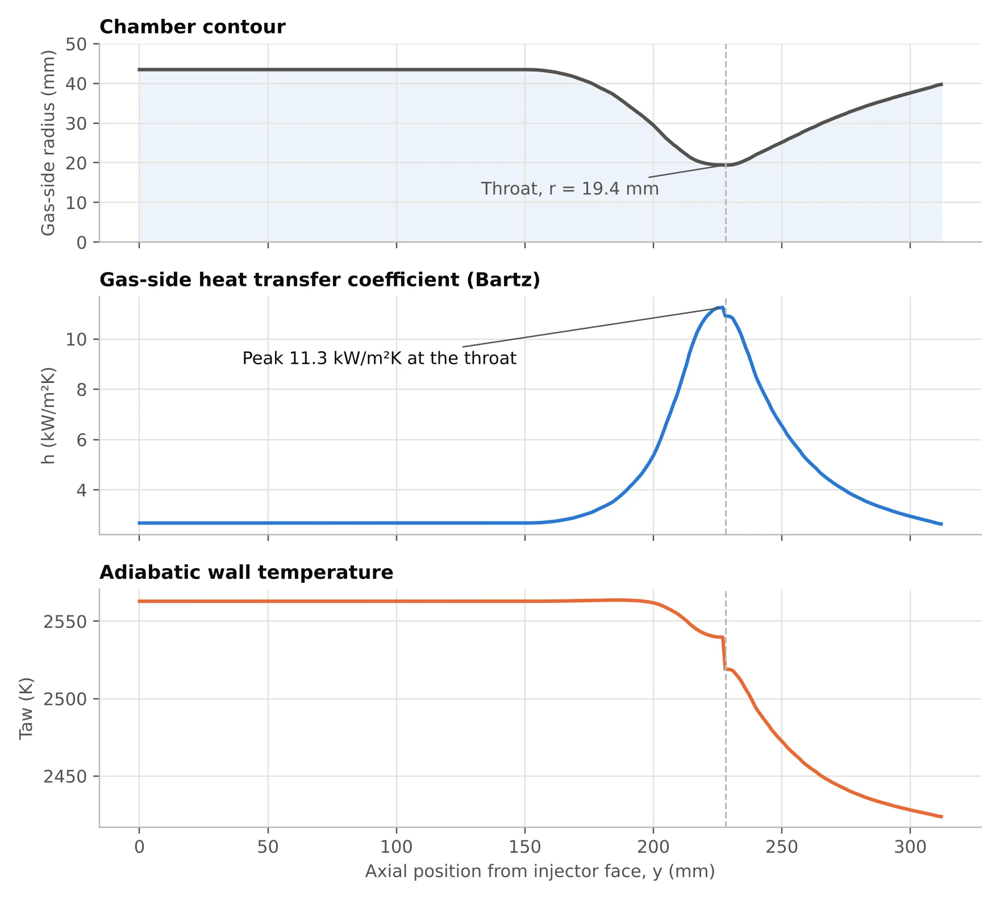
This is conjugate heat transfer. Heat enters the printed wall, conducts through 2 mm of metal and leaves with the IPA in the channels. Since the 35 channels are identical, I modelled a single 10.29° slice with periodic sides, cut through the ribs so both cut faces are solid metal. The coolant body, one channel plus its share of the nozzle-end manifold, was made by filling the cavity inside the slice. Coolant enters at the nozzle end and flows against the gas towards the injector.
The mesh has 5.24 million cells, with ten inflation layers and a 0.01 mm first cell to keep y+ near 1 for k-ω SST. IPA properties vary with temperature, because its viscosity falls about four times as it heats, which changes the cooling a lot.
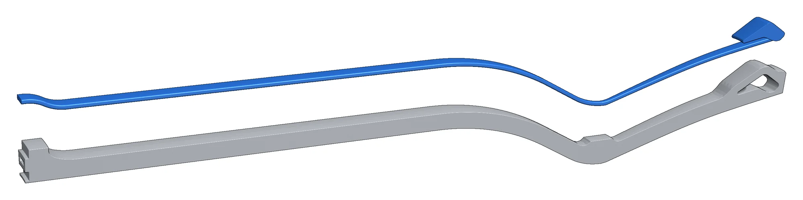
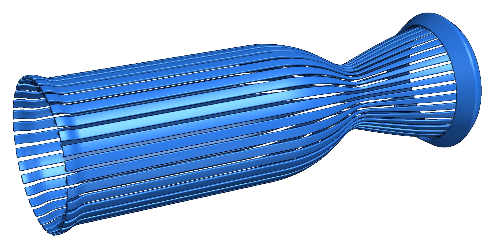
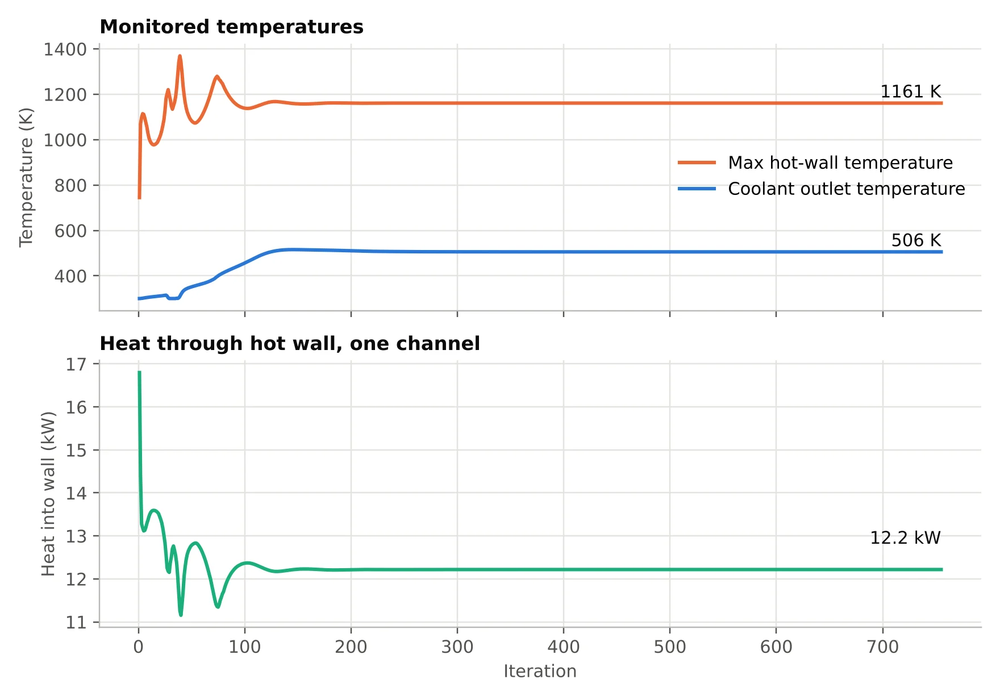
Each channel takes 12.2 kW, about 428 kW for the whole engine, against a 440 kW hand estimate. The gas-side wall peaks at 888 °C just before the throat, well past the melting point. The coolant-side wall reaches at least 429 °C, so the IPA would boil at the wall, and the fuel leaves the channels at 232 °C, just short of its critical point.
Both failures come from the same place. There is more heat than slow-moving IPA, at about 1 to 2 m/s, can carry away through a wall with a low temperature limit. Bartz tends to overpredict, possibly by up to two times, but even halved the throat would still sit at several hundred degrees. This is the result that moved the design towards film cooling.
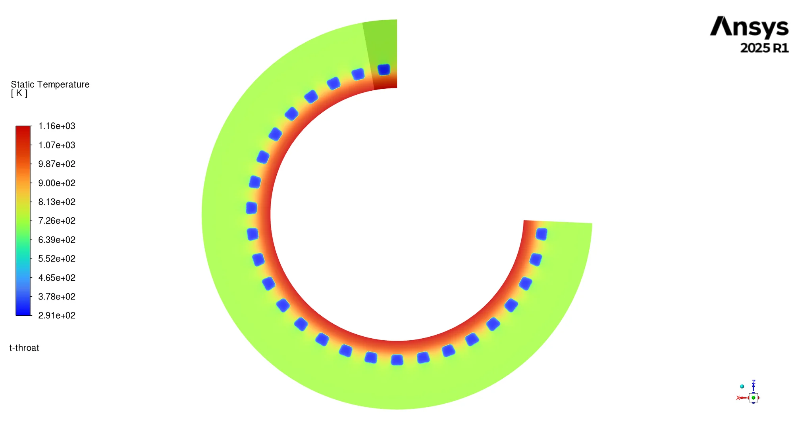
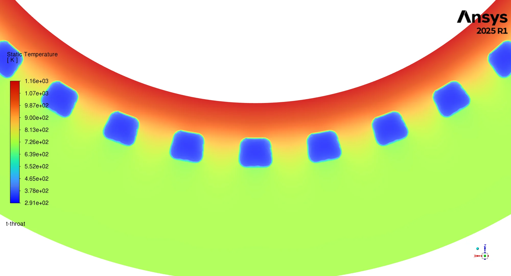
Throat sectionChannels, close up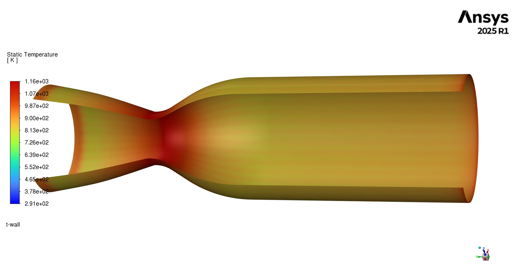
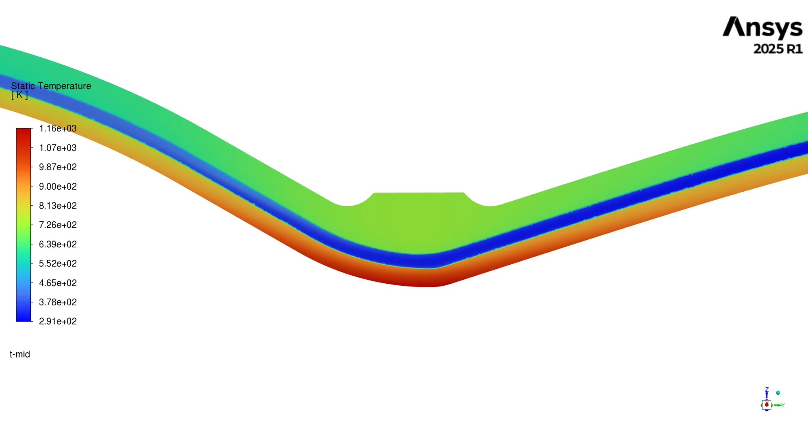
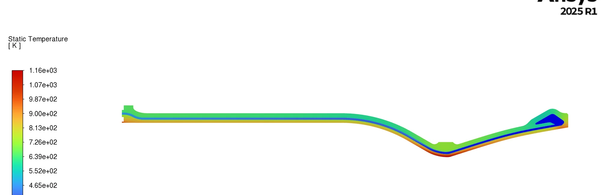
Separately, I checked whether the wall holds the pressure in steady running. The coolant pushes in at 42 bar, while the gas pressure falls from 29.7 bar in the chamber to 1.2 bar at the exit. The model uses the same 1/35 slice with frictionless symmetry on the cut faces, fixed at the injector end, and a swept quadratic hex mesh: five elements through the 2 mm liner and 0.2 mm refinement at the throat.
The liner is squeezed inward and the jacket pulled outward, and both stay well within yield. Average von Mises stress is 40 MPa and the nozzle exit moves 0.09 mm. Using a room-temperature yield strength of 145 MPa, the safety factors are 5.2 in the chamber liner, 2.1 in the nozzle liner and 2.4 in the jacket.
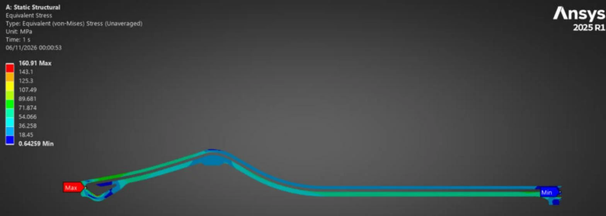
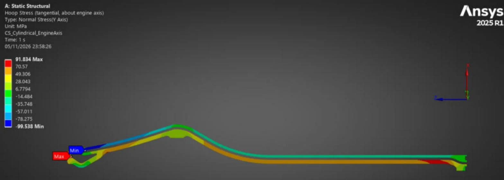
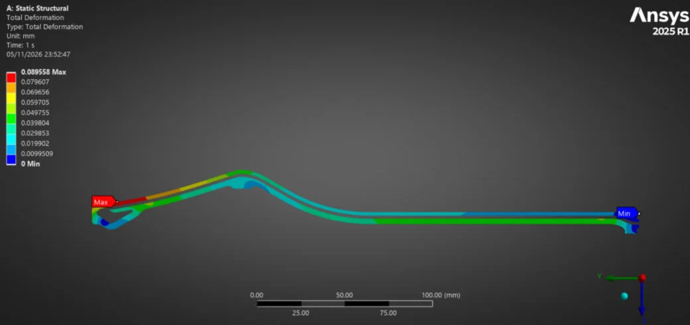
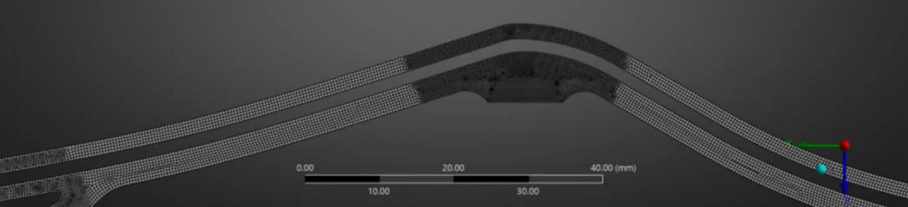
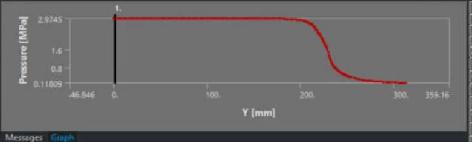
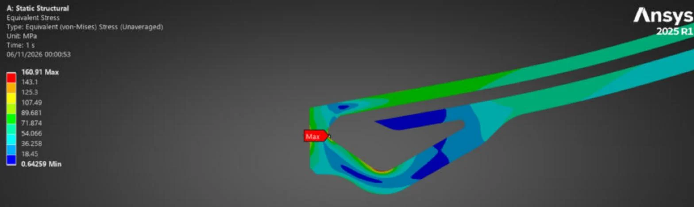
I ran five meshes from 64,000 to 513,000 nodes. Hoop stresses changed by less than 0.2%, and the peak at the 0.4 mm mesh I used was within 1.7% of the finest. A thin-wall force balance on half the ring matched the FEA hoop stress in the chamber to within 0.1% for both liner and jacket, and the nozzle liner to within 0.8%. The nozzle jacket differs by 14%, and the throat more, where the wall stops behaving like a thin cylinder.
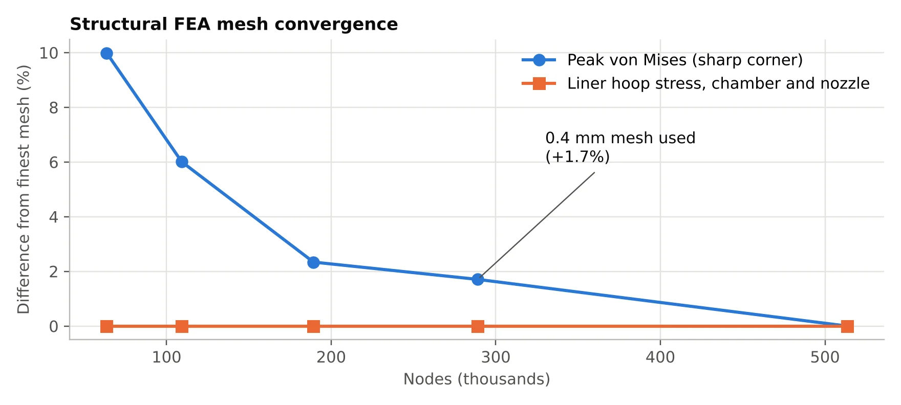
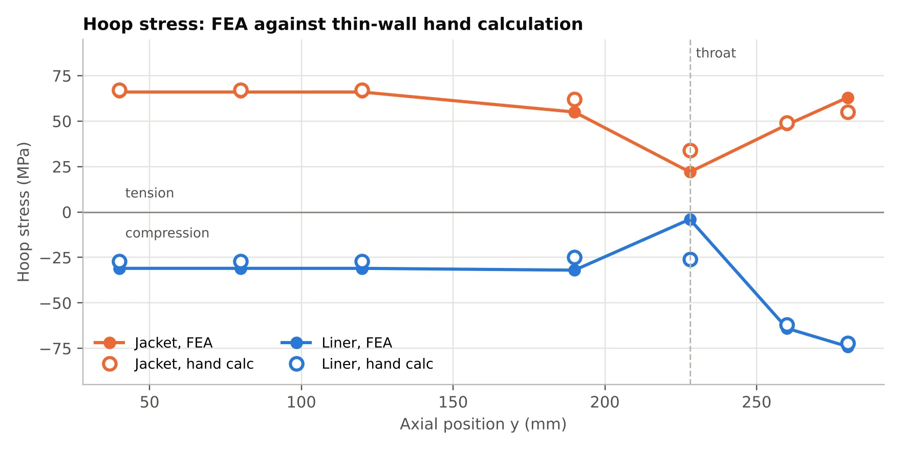
Because the CFD showed the wall running hot, I repeated the structural run with temperature-dependent AlSi10Mg properties at four uniform wall temperatures.
The injector face is held only axially, so the wall is free to grow outward. Thermal expansion grows the deformation from 0.09 mm to 2.86 mm, but the stress stays the same, because a uniformly heated wall that can expand freely picks up no thermal stress. The safety factor falls from 2.03 to 1.09 at 600 K (327 °C) purely because the alloy softens. That is still far below the 888 °C the regen-only CFD predicted, which points to the same conclusion: the wall has to run much cooler.
This study uses one uniform temperature. In the real engine the liner is much hotter than the jacket, and that difference would add thermal stress. Mapping the CFD temperatures into the FEA is the next step.
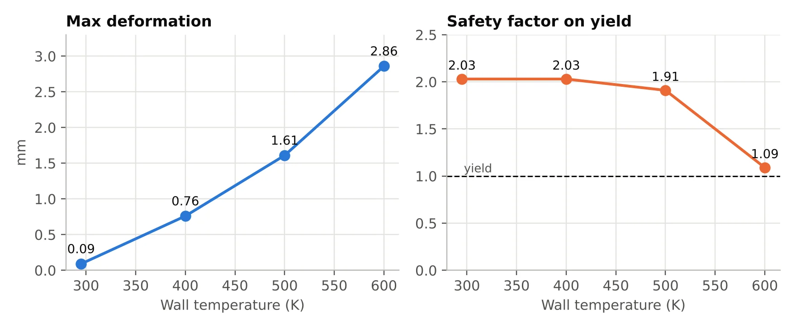
CEA and Bartz as Fluent expressions.
1/35 sector, 0.014% energy balance.
Five meshes and a hand-calculation check.
Find the film fraction that keeps the throat below about 250 °C.
Manufacture and test at the competition.
This was my first conjugate heat transfer simulation. The biggest lesson was not to call a run converged because the residuals looked good: the energy balance and flat monitors are what told me the answer could be trusted. I also learned that a simple correlation can be the right boundary condition when the aim is a design decision rather than a precise number, as long as you know which way it errs. And checking the FEA against a hand calculation took ten minutes and gave me more confidence than another mesh would have.
CEA output and the CAD contour turned into h and adiabatic wall temperature profiles, fitted as Fluent expressions so the wall temperature is solved, not assumed.
1/35 periodic sector, 5.24M cells, temperature-dependent IPA. Showed regen cooling alone would melt the throat.
Pressure-loaded printed wall with a swept hex mesh. Found it well within yield and traced the only high stress to a sharp corner.
Five-mesh convergence, thin-wall hand check within 0.1% in the chamber, and a temperature study of alloy softening.